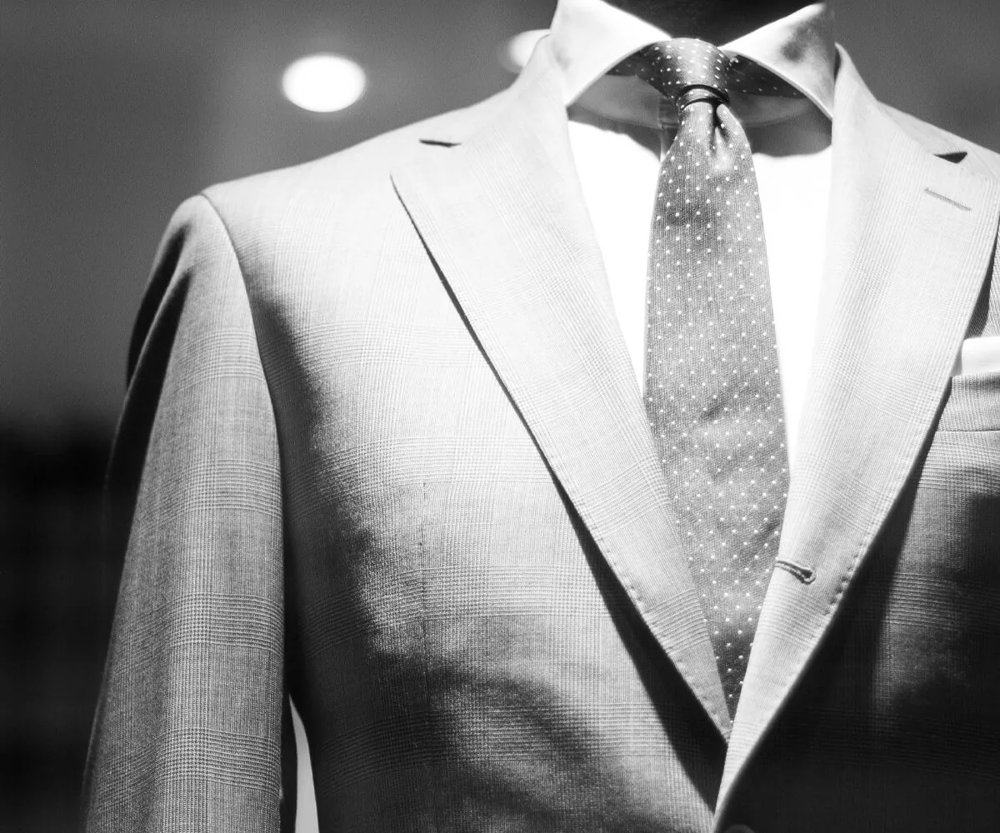
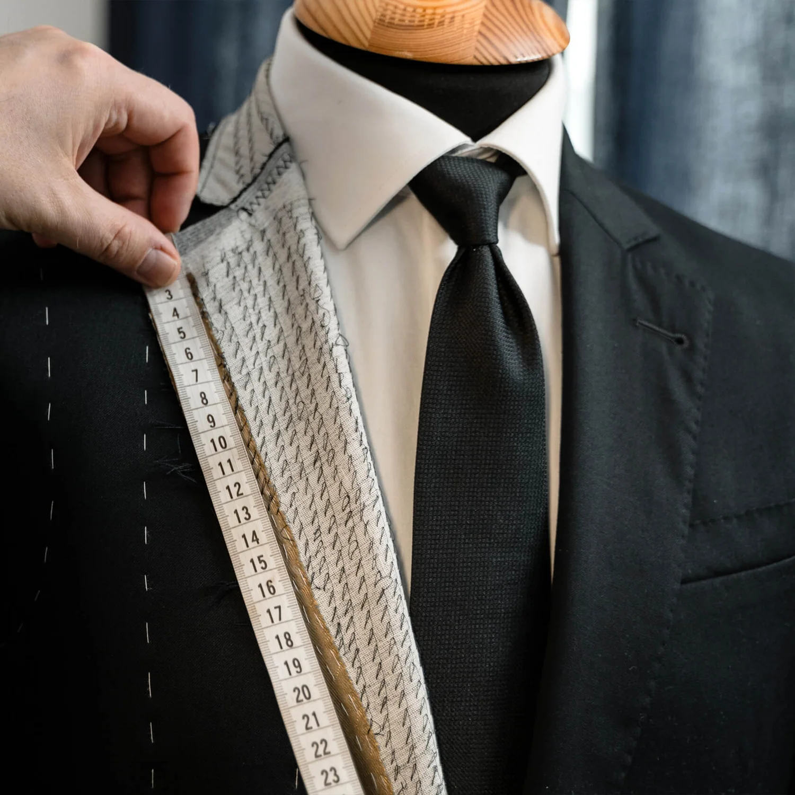
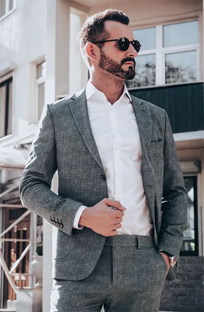
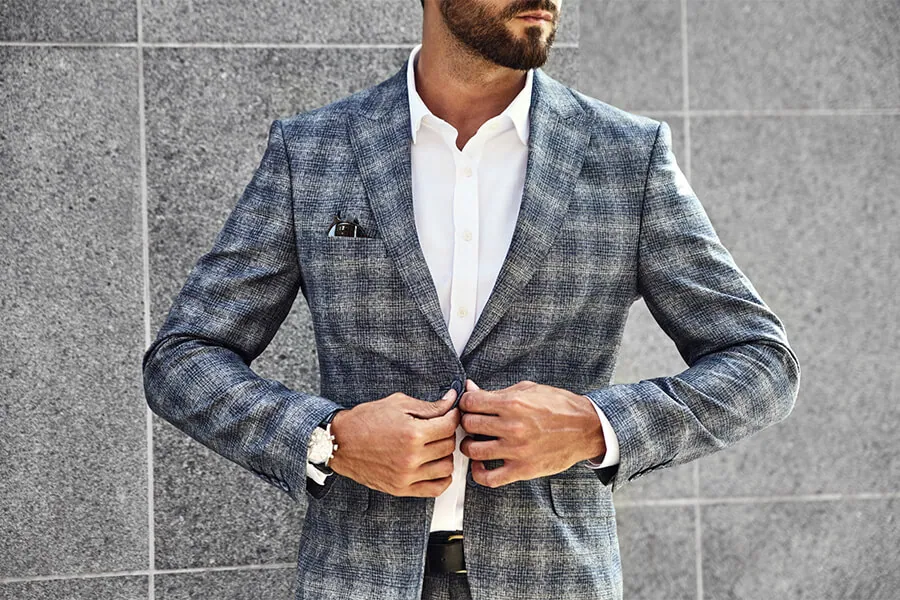
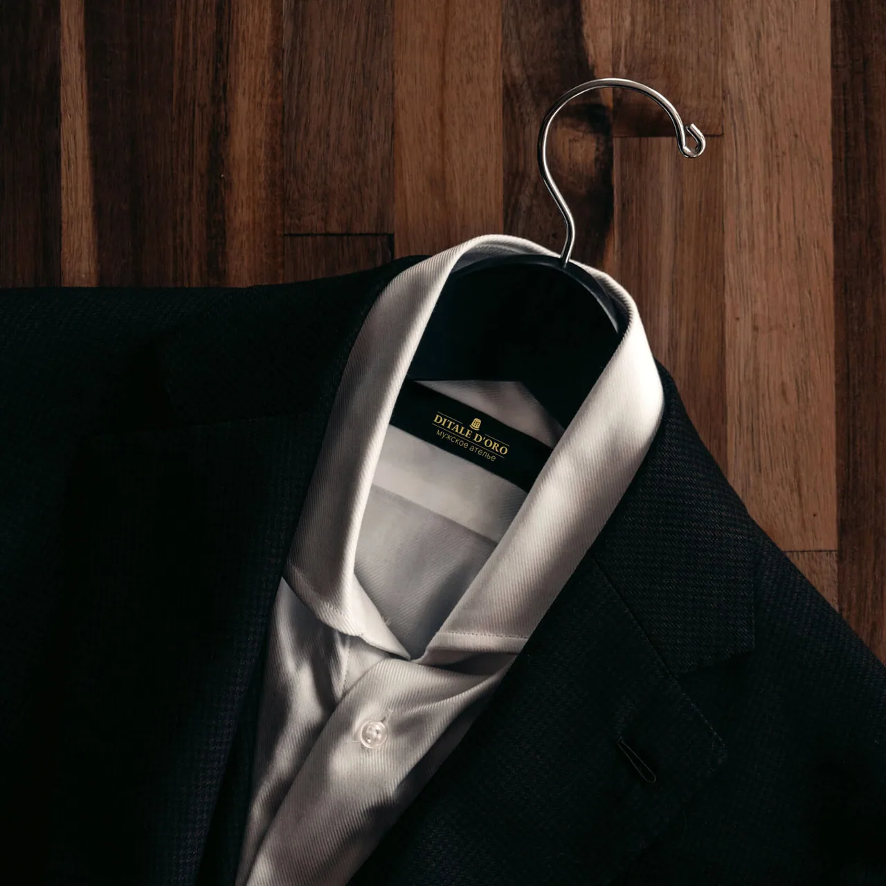
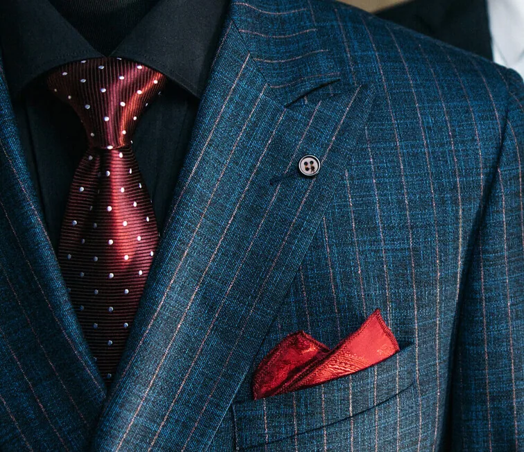
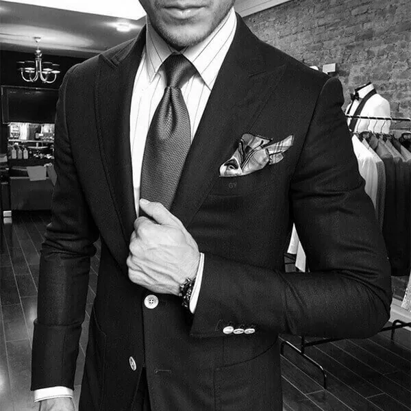
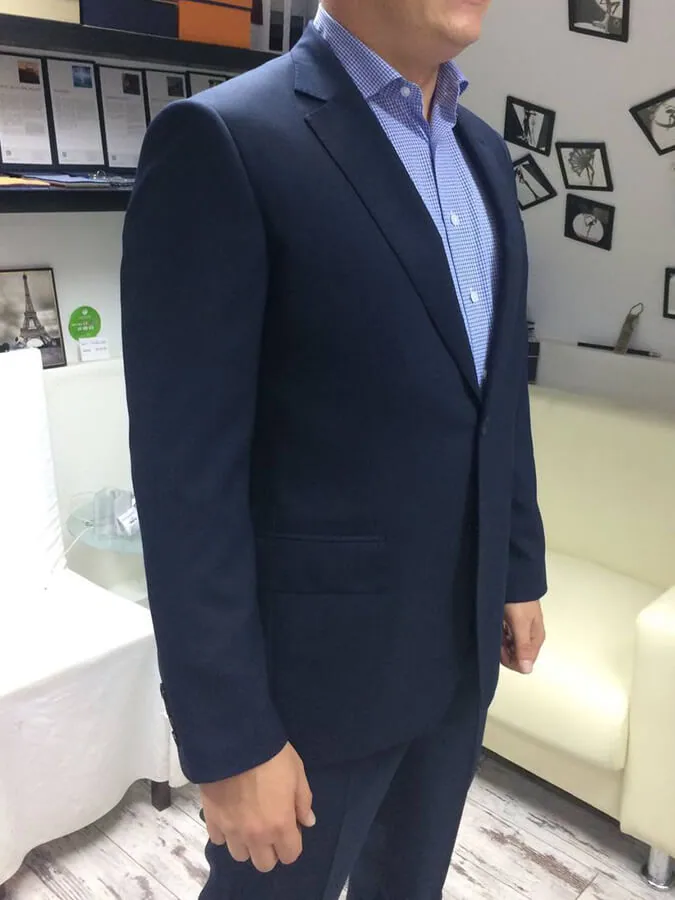
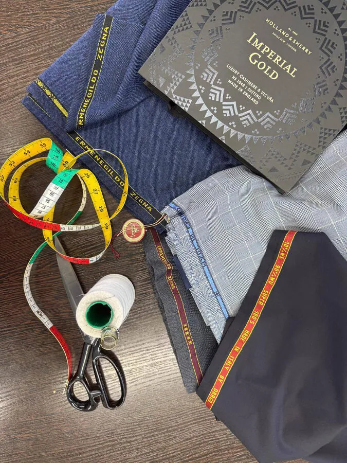

Индивидуальный пошив
Мужской костюм
Двойка для рабочих встреч или костюм для выхода. Начинаем с того, как вы проводите день, затем выбираем силуэт и строим лекала по вашим меркам.

Крой и посадка
У непарных вещей и строгого делового комплекта разная задача. Для классического костюма можно выбрать число пуговиц, форму карманов и защипы на брюках. Форму пиджаку придаёт бортовка, детали соединяем ручными стежками.
На первой примерке
Сверяем плечевой шов с линией плеча. Застёгиваем пиджак, чтобы проверить шлицу и баланс полочек. Длину брюк уточняем по обуви.
Первая встреча — 1 час, первая примерка — 30 минут, финальная — 40 минут.


Какая ткань подойдёт
Для делового костюма подойдут шерсть и кашемир, для тёплого сезона — хлопок и лён. Приложим образцы к фигуре и посмотрим, как ведёт себя материал.
Как складывается цена
Подгонка клетки, больший расход ткани и ручная отделка, в том числе монограмма или петли, влияют на итоговую сумму.
Ткани и поставщики

Фасоны и детали
Подборка кроя, фактур и отделки для разговора с портным.











Из галереи ателье






Первая встреча
Сравним образцы и снимем мерки на Тверской, 9с7. Для посещения нужна предварительная запись.